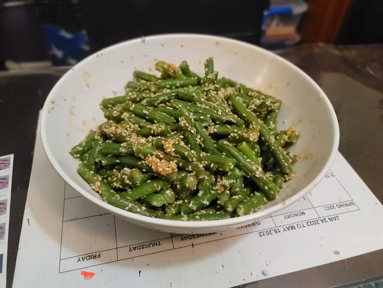

Green Bean Gomaae

Ingredients:
- 1/2 lb Green beans, trimmed and cut in 2 inch pieces
- 3 tbsp Sesame seeds
- 1 tbsp Soy sauce
- 1 tbsp Sugar
Instructions:
- Bring a pot of salted water to a boil. Add in the green beans and let cook for about 5 minutes. Then strain and rinse with cold water.
- Toast the sesame seeds in a pan over medium-low heat for a couple minutes or until they are fragrant and you can hear a popping noise. Then grind them into a course paste.
- Combine the sesame seeds with the soy sauce and sugar. Then toss the green beans with the dressing until evenly coated. Serve at room temperature.